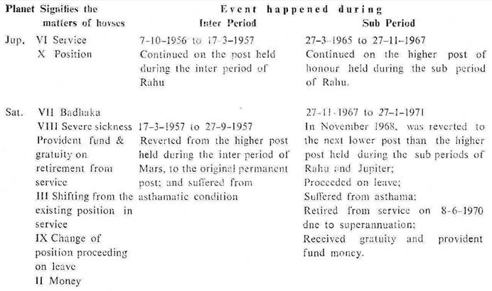

Male. Birth 9-4-1949 Saturday; 1.18 P.M. I. S. T.; 23°N 2′ 72°E 35′ Ayanamsa 23°3′.
This native was born during the period of Ketu with balance of 5y 9M 18D. The period of Venus started from 27-1-1955. So the effect of the inter period of each planet during the sub period of Venus were observed for future enlightenment of the happenings that might occur during the sub period of the same inter period ruler in the major period of Venus.
These effects were observed concerning the future of the Native's father. It was found that if the inter period ruler showed favourable results, say for service, then during the sub period of the same planet (inter period ruler) favourable results in respect of service were experienced to a greater extent and degree. Similarly if the inter period ruler proved unfavourable, say regarding health or disease, then the sub period of the same planet (inter period ruler) proved worse regarding health and disease.
A comparative note of events of happened (1) during the inter period of each planet in the sub period of venus, and (2) during the sub period of the same planet (as in the inter period) in the major period of Venus is given here under for guidance.
In this birth chart consider the 9th cusp Pisce 3°48′ as the Asc. for the native's father and Judge the houses accordingly. For convenience the roman letters are given to each house counted from the 9th cusp and a table showing the significators in respect of the native's father is as under:
Ketu being aspected by Saturn denotes VI, XI & XII; and being aspected by Mars, Ketu denotes I, II & IX.
Mars Mercury, Venus and Sun are in conj. with one another, so each of them denotes, I, II,III, IV, VII, VIII & IX.

The native of this horoscope is a qualified M.B.B.S Doctor and he runs his own dispensary.